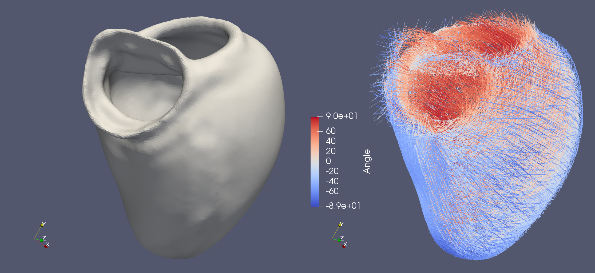
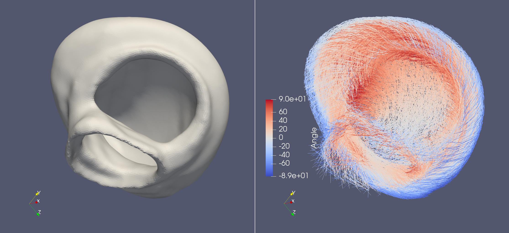

Life X - 01_strocchi_LV#
Life X has published their own implementation of the LDRB algorithm and with that they also published a lot of example meshes. This demo aims to try out this implementation of the LDRB algorithm on these example meshes. The LifeX example meshes can be found at https://zenodo.org/record/5810269#.YeEjWi8w1B0, which also contains a DOI: https://doi.org/10.5281/zenodo.5810269.
This demo assumes that you have downloaded the folder with the meshes in the same format as they are uploaded on zenodo, so that the gmsh files are located in a folder called lifex_fiber_generation_examples/mesh.
First we import the necessary packages. Note that we also import cardiac-geometries which is used for converting from .msh (gmsh) to .xdmf (FEnICS).
import dolfin
from pathlib import Path
import ldrb
import cardiac_geometries
First we will load the mesh and markers. This is a large mesh that you probably want to run in parallel, but you need to first convert the mesh to a fenics mesh and that has to be done in serial. You can make sure that the mesh is saved by setting unlink = False.
To run the in parallel you can e.g do
mpirun -n 4 python3 demo_lifex_strocchi_LV.py
which will run the demo on 4 processors.
# We will specify an output directory for the mesh
outdir = Path("01_strocchi_LV")
# If we run in serial we will convert the gmsh file to dolfin, otherwise we load the mesh and facet function directly from the folder.
if dolfin.MPI.comm_world.size == 1:
mesh, _, marker_functions = cardiac_geometries.gmsh2dolfin(
"lifex_fiber_generation_examples/mesh/01_strocchi_LV.msh",
outdir=outdir,
unlink=False,
)
ffun = marker_functions.ffun
# exit() # If you want to run in parallel you can exit here
else:
if not (outdir / "mesh.xdmf").is_file():
raise RuntimeError(f"Mesh not found in {outdir}. Please run in serial first")
mesh = dolfin.Mesh()
with dolfin.XDMFFile((outdir / "mesh.xdmf").as_posix()) as f:
f.read(mesh)
if not (outdir / "ffun.xdmf").is_file():
raise RuntimeError(f"ffun not found in {outdir}. Please run in serial first")
ffun = dolfin.MeshFunction("size_t", mesh, 2)
with dolfin.XDMFFile((outdir / "ffun.xdmf").as_posix()) as f:
f.read(ffun)
#
#
#
These are the actually markers (but we only support one base at the moment)
original_markers = {"epi": 10, "endo": 20, "aortic_valve": 50, "mitral_valve": 60}
So we just use these markers instead
markers = {"epi": 10, "lv": 20, "base": 40}
And update the markers accordingly
ffun.array()[ffun.array() == original_markers["aortic_valve"]] = markers["base"]
ffun.array()[ffun.array() == original_markers["mitral_valve"]] = markers["base"]
Select linear Lagrange elements
fiber_space = "P_1"
Compute the fiber-sheet system
fiber, sheet, sheet_normal = ldrb.dolfin_ldrb(
mesh=mesh,
fiber_space=fiber_space,
ffun=ffun,
markers=markers,
alpha_endo_lv=60, # Fiber angle on the endocardium
alpha_epi_lv=-60, # Fiber angle on the epicardium
beta_endo_lv=0, # Sheet angle on the endocardium
beta_epi_lv=0, # Sheet angle on the epicardium
)
And save the results
with dolfin.XDMFFile(mesh.mpi_comm(), "01_strocchi_LV_fiber.xdmf") as xdmf:
xdmf.write(fiber)
 